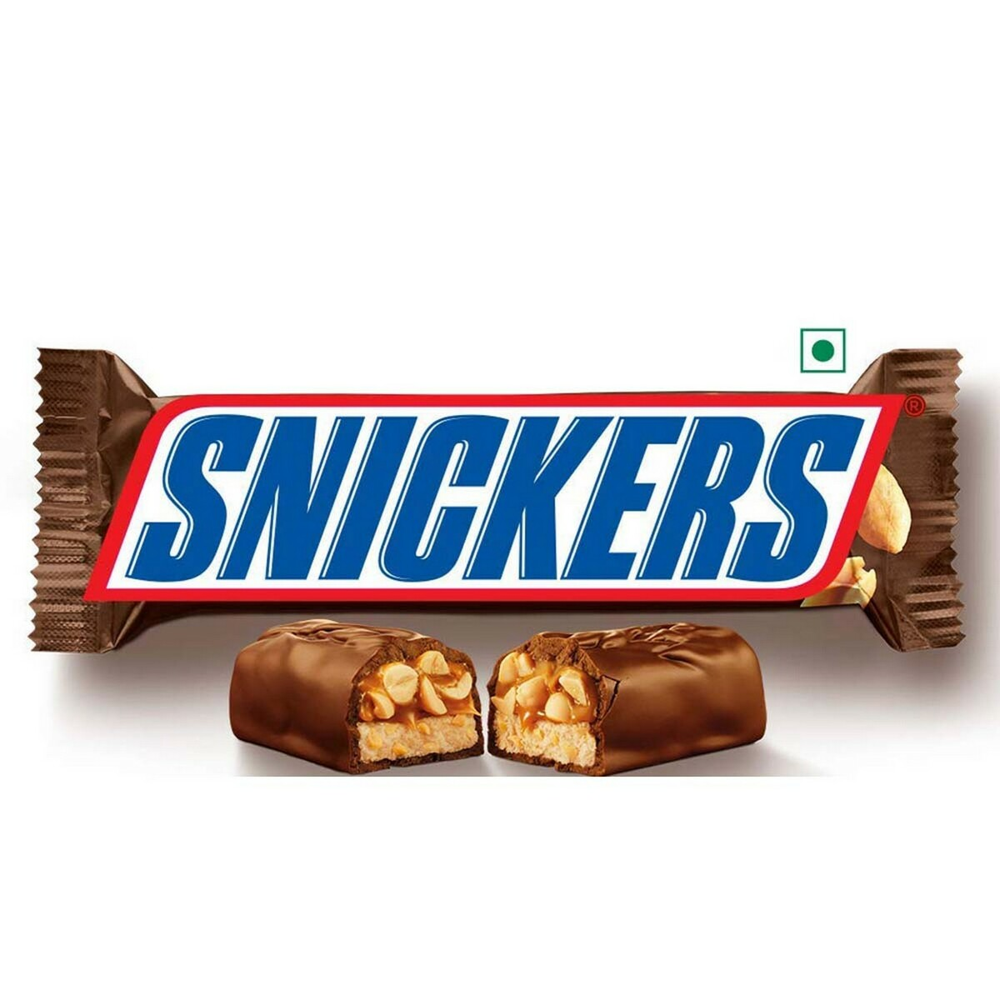

The early (1939) ingredients list includes white sugar, sweet milk chocolate, corn syrup, peanuts, milk condensed with sugar, coconut oil, malted milk, whites of eggs and salt. By 2019, the ingredients for the original bar had been refined to milk chocolate (sugar, cocoa butter, chocolate, skim milk, lactose, milkfat, soy lecithin, artificial flavor), peanuts, corn syrup, sugar, palm oil, skim milk, lactose, salt, egg whites, artificial flavor
Over the years, the bar weight has decreased: Before 2009, in the UK a single Snickers bar had a weight of 62.5g. This weight was subsequently reduced to 58g in 2009, and to 48g in 2013. In the United States the listed weight in 2018 was 52.7 g. In Australia, Snickers bars were originally made locally and weighed 53g, however in the late 2010s production moved to China and the bars were shrunk to 50g. In 2022, production returned to Australia and bars further reduced in weight to 44g.
In 1930, Mars introduced Snickers, named after the favorite horse of the Mars family. The Snickers chocolate bar consists of nougat, peanuts, and caramel with a chocolate coating. The bar was marketed under the name "Marathon" in the UK and Ireland until 1990, when Mars decided to align the UK product with the global Snickers name (Mars had marketed and discontinued an unrelated bar named Marathon in the United States during the 1970s which was similar to the UK's Curly Wurly). There are also several other Snickers products such as Snickers mini, dark chocolate, ice cream bars, Snickers with almonds, Snickers with hazelnuts, Snickers with pecans, Snickers peanut butter bars, Snickers protein and Snickers with Extra Caramel, as well as espresso, fiery, and sweet & salty versions.
n 1980, Snickers (and Marathon) ran ads which featured a variety of everyday people discussing why they like Snickers. The ads featured a jingle that said "It's so satisfying" and had the classic hand that would open and close showing a handful of peanuts converting to a Snickers bar. "Packed with peanuts, Snickers really satisfies" was shown in the commercials.
